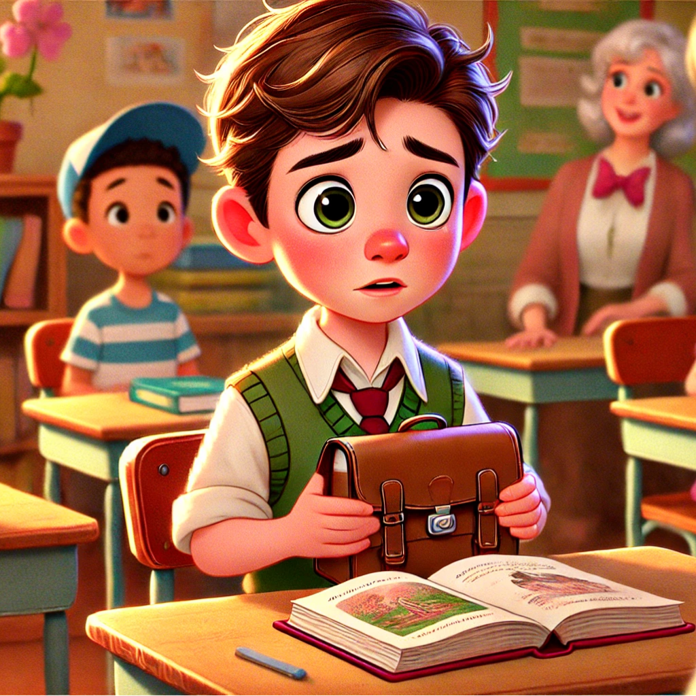

قصةالكتاب المفقود
في يوم دراسي عادي، كان حسن في المدرسة يستعد للمشاركة في نشاط قراءة
مع زملائه عندما فتح حقيبته اكتشف أنه نسي كتابه المفضل في المنزل.
شعر بالحزن أنه كان متحمسًا جدًا لقراءة الفصل الجديد أمام أصدقائه
قرر حسن أن يسأل معلمته إذا كان بإمكانه العودة إلى المنزل لإحضار الكتاب
لكن المعلمة أخبرته أن الوقت لا يسمح.. فقال لها: "كنت سأكون أول من ينهي الفصل اليوم!
قال له صديقه يوسف: "المرة القادمة، تأكد من حقيبتك قبل مغادرة البيت.